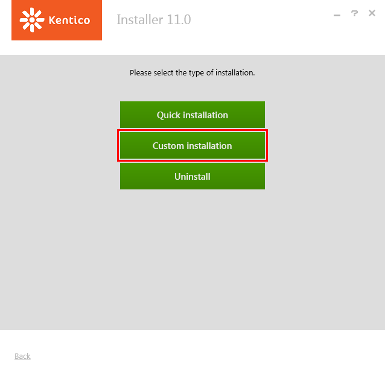
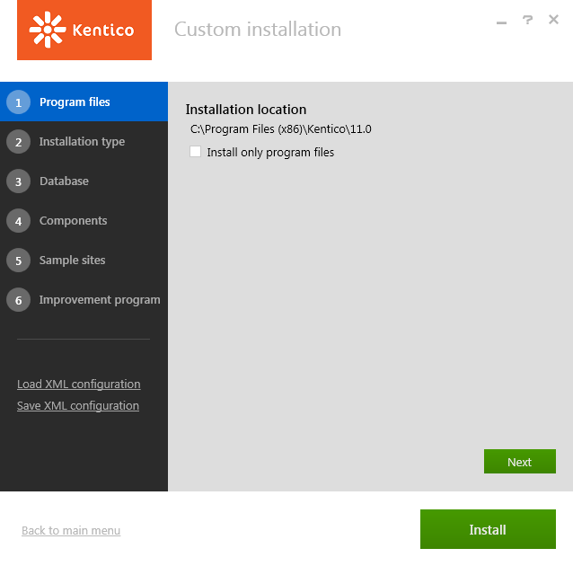
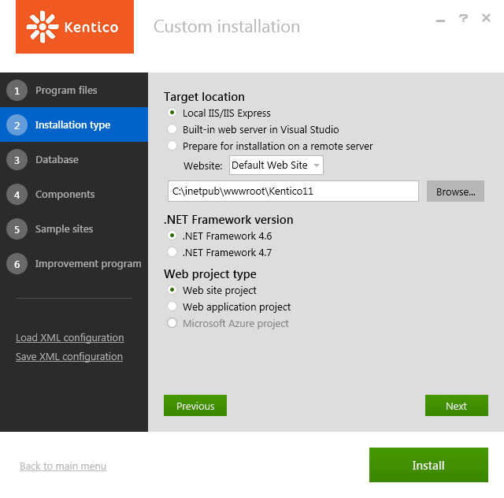
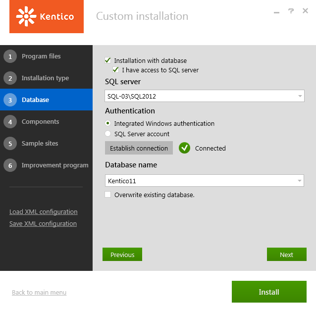
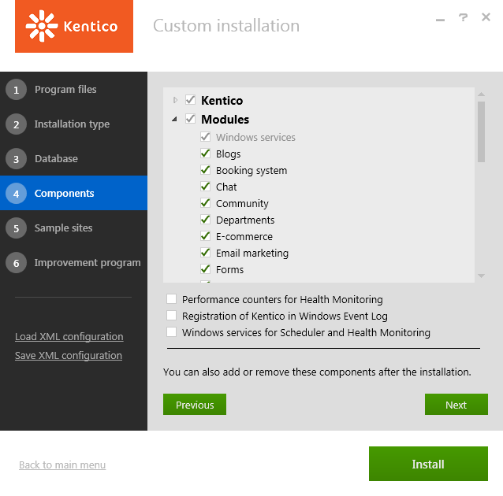
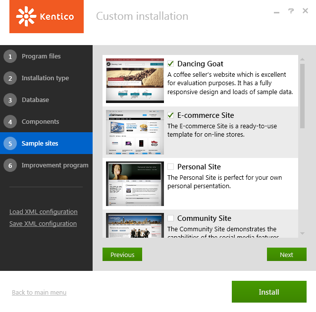
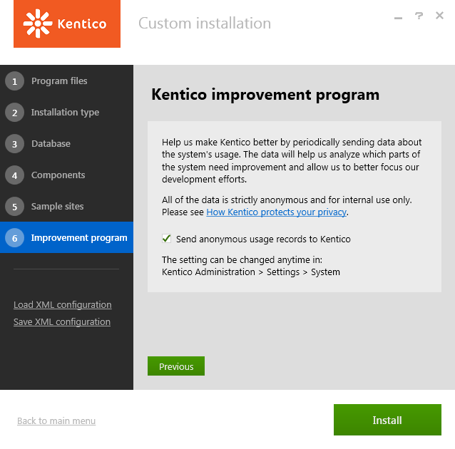

Installing Kentico - custom installation
The following procedure describes the installation of Kentico in the most basic scenario for development purposes. You need to have an IIS server installed along with access to an SQL server.
Click Next on the welcome screen of the installer.
Select your country. The installer automatically tries to pre-select the appropriate country based on your system's locale.
Agree to the license terms.
Click Next.
Click Custom installation.

Custom installationCheck if the installation location for program files suits you (these are only the setup files, not the web project).

Choosing program files installation locationClick Next.
Check if the installation location for your web project suits you (the default path is C:\inetpub\wwwroot\Kentico11).

Selecting installation typeChoose your installation type configuration. We recommend the default options:
Local IIS/IIS Express – installs the web project into the local Internet Information Services server. If you do not have IIS installed, the tool automatically installs the simplified version, IIS Express.
If you have an existing IIS installation on the machine, it must contain at least one Website (you can select the target Website in the installer). The selected website must have at least one Site Binding of the http type, otherwise an error will occur during the installation.
.NET Framework 4.6 – uses the .NET Framework version 4.6 installed on your machine. If you do not have it installed, the Installer will install it automatically.
Web site project – installs the web site project type.
You can read about the differences between the two project types in Web Application Projects versus Web Site Projects on MSDN.
To install a Microsoft Azure project, you need to select the Built-in web server in Visual Studio option. See Installing Kentico Azure projects for more information.
Click Next.
Check I have access to the SQL server.
Select your SQL server from the list.
Choose an authentication option for your SQL server.
The most common is an SQL Server account, in which case fill in the user name and password.
If you choose the Integrated Windows authentication option:
Make sure that the login of the user you are authenticated as already exists in the SQL server database and has correct schema configured (recommended schema is dbo).
Click Establish connection.
Type the name of a new database for your web project.

Setting up the database installationClick Next.
Leave the default configuration of components (all components included) and click Next.

Selecting installation componentsChoose a site:
Dancing Goat – a showcase of some of the Kentico Integrated Marketing Solution functionality and modern, responsive web design built within Kentico.
E-commerce Site – a model of the Kentico e-commerce solution.
Corporate Site – a showcase of most of Kentico's capabilities.
Blank Site – to begin the development of a new website from scratch.
MVC Blank Site – a blank template used for sites that use an MVC application for their presentation. The site is only intended to be a repository for content displayed by an external MVC application. The content itself is managed by content editors.
License limitations for sample sites
Some of the sample sites use features that are only available in specific Kentico license editions. If you use a license edition lower than Kentico EMS, you may encounter problems when working with certain features (Content Personalization, for example). The initial trial license is equivalent to an EMS license.

Click Next.
Decide whether to enable the Kentico improvement program for the installed instance (via the Send anonymous usage records to Kentico checkbox).

Opting in for the Kentico improvement programClick Install.
After the installation is successfully finished, Kentico automatically opens in the default browser.
Default sign in credentials
The default user name to a newly installed web project is administrator, the default password is blank (no password).
It's highly recommended that you change the password after you finish the installation.